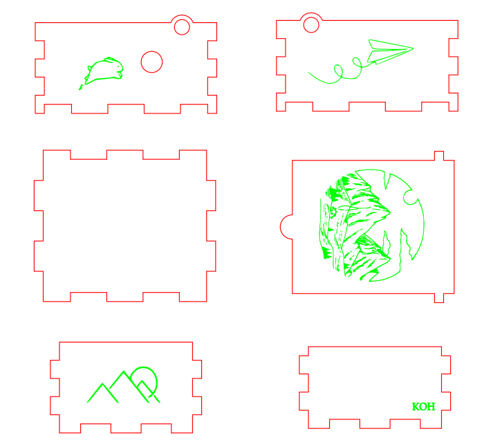

Inkscape
Inkscape is a free and open-source vector graphics editor used to create vector images, primarily in Scalable Vector Graphics format. Other formats can be imported and exported. Inkscape can render primitive vector shapes and text.
Thorughout my assignment on laser cutting for music box, I used the application, Inkscape to edit my sketches and images. First, I imported the wood piece as dxf file into Inkscape. I downloaded designs that I wished to be engraved on my music box and imported into the Inkscape file. After imported the image, I traced the bitmap of the image and edited the settings such as the pixel and brightness. With that, raster image is produced and ready to be placed on the desired position.

Then, I changed the colour of the hairline accordingly. Mainly red for the wood that has to be cut and green for thewood to be engraved.
CorelDraw
Besides, I have also utilized the usage of CorelDraw while working on laser cutting in the lab. I used CorelDraw to make adjustments on the sizing and details on the wood piece. I ensure all the lines are in the correct colour to differentiate the wood that is needed to be cut or engraved.